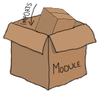

Modules
modules là gì ?MACRO

Làm việc với shell được coi là một trong những thành phân quan trong nhất của ngôn ngữ lập trình động (dynamic programming language). Nó rất hưu ích trong việc kiểm thử các đoạn mã trong chương trình . Hầu hết các kiểu dữ liệu cơ bản trong Erlang đều có thể sử dụng trực tiếp mà không cần phải một trình soạn thảo văn bản hay lưu trữ dưới file . Bạn có thể để bàn phím sang một bên, đứng dây ra ngoài chơi bóng và quay trờ lại sau một ngày và gõ lại nó, Nhưng nếu bạn dừng ở bước này bạn thực sự là một lập trình viên tồi. Đoạn mã lên được lưu ở đâu đó để có thể tái sử dụng!
Đó là những gì mà modude hướng tới. Modules là một sự kết hợp của một tập các hàm trong cùng một file, được đặt dưới một cái tên. Ngoài ra,
tất cả các hàm trong Erlang phải được định nghĩa trong các module.
Có thể bạn không nhận ra rằng, bạn đã từng sử dụng module trước đó.Vd như các hàm xây dựng sẵn ( BIFs ) mà ta đề cập qua các mẫu vd ở chương trước chính là module
vd như hàm hd hay tl,
thuộc về module trong erlang module, cưng như các toán tử số học, logic hay đại số Boolean cũng vậy.
các hàm xây dựng sẵn ( BIFs ) từ module erlang khác với các hám mà được nạp tự động khi sử dụng với Erlang
. Để gọi một hàm khác trong một module bạn sẽ cần sử dụng theo mẫu: Module:Function(Arguments).
You can see for yourself:
1> erlang:element(2, {a,b,c}).
b
2> element(2, {a,b,c}).
b
3> lists:seq(1,4).
[1,2,3,4]
4> seq(1,4).
** exception error: undefined shell command seq/2
Ở đây hàm seq được đinh nghĩa trong module list sẽ không được tự động nạp, trong khi hàm element thì khác.
một thông báo lỗi 'undefined shell command' được hiển thị trong shell vì nó đang cố tìm kiếm một lệnh giống f()
nhưng không tìm thấy. tuy vậy không phải tất cả các hàm đề được nạp ,cũng có một số hàm trong module erlang
không được tự động nạp và chúng cũng không được sử dụng thường xuyên.
Nói một cách logic, bạn lên định nghĩa các hàm trong cùng một file hay module mà có cùng chức năng
Vd một số các thao tác trong lists thì lên đặt chúng trong module lists,
trong khi một số các thao tác nhập xuất ( ví dụ như ghi trên terminal hay ghi vào file) thì lên được gộp lại và đặt trong module io.
chỉ có một vài module như module One of the only modules you will encounter which doesn't respect that pattern is the aforementioned erlang
module that has functions which do math,
conversions,
deal with multiprocessing, fiddle with the virtual machine's settings, etc.
They have no point in common except being built-in functions. You should avoid creating modules like erlang and instead focus on clean logical separations.
Khai báo Module
Khi bắt đầu viết một module, bạn cần khai báo 2 thứ sau đây: hàm (functions) và thuộc tính ( attributes ). thuộc tính là metadata được sử dụng để mô tả các thành phần trong module vd như tên, các hàm sẽ hiển thị và sử dụng bên ngoài module, thông tin về tác giả ,... . metadata rất hữu ích vì nó cho phép người dùng có được thông tin từ compiled code mà không cần phải truy xuất tới mã nguồn.
Trên thực tế, có rất nhiều các thuộc tính There is a large variety of module attributes currently used in Erlang code across the world; as a matter of fact,
you can even declare your own attributes for whatever you please.
There are some pre-defined attributes that will appear more frequently than others in your code.
Tất cả các thuộc tính ( attributes ) phải tuân theo mẫu -Name(Attribute).. Và nó là cần thiết để module của bạn có thê biện dịch được:
- -module(Name).
- Đây luôn là thuộc tính ( biểu thức ) xuất hiện ở đầu file, Có một lí do hợp lí cho điều này:
thể hiện cho tên của module đó , trong đó Name là một atom.
Và nó sẽ được sử dụng để gọi các hàm từ các module khác.
Chúng ta sẽ gọi theo mẫu
M:F(A), trong đó M là tên của module, F là tên của hàm cần gọi và A là đối số cần truyền vào của hàm được gọi đó.
Nào hãy đa đến lúc code rồi! trước tiên chúng ta se viết một module đơn giản với tên gọi là useless. Hay mở trình soạn thảo của bạn lên và gõ đoạn mã dưới đây,
sau đó lưu nó lại và đặt tên là useless.erl:
-module(useless).
dòng này là một module hợp lệ sao. Chính xác nó là một module mà không kèm với việc định nghĩa các hàm. tiếp đó hãy xét xem nhưng hàm nào sẽ được cho phép gọi từ bên ngoài module 'useless'. Để làm điều này chúng ta sẽ thực hiện như sau:
- -export([Function1/Arity, Function2/Arity, ..., FunctionN/Arity]).
- Dòng này sẽ nói cho ta biết những hàm mà đã được định nghĩa trong module đó có thể gọi bên ngoài. Như bạn thấy nó yêu cầu một danh các hàm mà chúng muốn sử dụng bên ngoài
. 'arity' của một hàm được biểu diễn bằng kiểu dữ liệu integer, đây sẽ là số lượng của đối số mà bạn muốn truyên vào hàm đó
. Điều này vô cùng quan trọng vì sẽ có các hàm cùng tên nhưng khác đối số nhau (giống với cách mà ta đinh nghĩa overmethod trong lập trình hướng đối tượng )
. vd hàm
add(X,Y)và hàmadd(X,Y,Z)cùng tên nhưng đối số khác nhau và sẽ được viết làadd/2vàadd/3.
Chú ý: Ta có thể coi các Exported functions như một interface của module. việc định nghĩa các interface rất quan trọng, nó sẽ xác đinh It is important to define an interface revealing strictly what is necessary for it to be used and nothing more. Việc làm này sẽ giúp bạn thao tác cùng với các thông tin khác ( thường là thông tin ẩn ) về những gì thực hiện trong đoạn mã của bạn mà không vi phạm đoạn mã có thể phụ thuộc vào mô đun của bạn.
Tiếp theo chúng ta sẽ export một hàm được đạt lên là 'add', hàm này sẽ nhận đầu vào gồm hai tham số.
thuộc tính -export có thể them sau khi khai báo thuộc tính module (-module):
-export([add/2]).
Tiếp đó chúng ta đinh nghĩa hàm 'add':
add(A,B) ->
A + B.
cú pháp của một hàm có dạng Name(Args) -> Body., trong đó Name
là tên của hàm va phải là một atom,
Body có thể là một hay nhiều biểu thức và phân cách nhau bởi dấu ,, và luôn kết thúc hàm bằng một đấu .
. chú ý rằng Erlang không sử dụng từ khóa return để trả về kết quả của một hàm như trong các ngôn ngữ khác mà thay vào đó
biểu thức logic cuối cùng của một hàm sẽ thực hiện và sẽ tự động trả về giá trị kết quả nếu bạn không tường mình giá trị cần trả về.
Hãy thêm hàm hello sau ( tại sao ? như bạn biết mỗi 'hello world' là một vị dụ điển hinh đối với người bắt đầu học lập trình và dĩ nhiên chúng ta không sử dụng làm vd, thậm chí ngay cả trong chương 4 này )
và đừng quên thêm hàm này vào thuộc tính -export.
%% Shows greetings.
%% io:format/1 is the standard function used to output text.
hello() ->
io:format("Hello, world!~n").
Vd dự trên ta thấy một comment trong Erlang bắt đầu bởi ký tự % (dùng %% chỉ đơn thuàn là một kiểu cách thuần tùy.)
.hàm hello/0 để chỉ ra cách để gọi hàm từ ngoài module dựa trên module của bạn.
Trong trường hợp này, dòng 'io:format/1 is the standard function used to output text', ở đây nó được viết trong comment để chú thích cho người đọc về hàm
io:format/1, đây là hàm trong một thư viên chuẩn io để sử dụng cho việc hiển thị text.
hàm cuối cùng chúng ta sẽ thêm vào trong module useless là hàm 'greet_and_add_two',
trong thân hàm này chúng ta sẽ gọi cả hai hàm add/2 và hello/0 mà chúng ta vừa đinh nghĩa:
greet_and_add_two(X) -> hello(), add(X,2).
Đùng quên thêm greet_and_add_two/1 vào trong danh sách cần export.
Bởi chúng ta khai báo trong cùng một module do khi gọi hàm hello/0 và add/2, chúng ta không cần phải
tường mình để thêm tên module phía trước mỗi hàm.
Tuy nhiên nếu bạn muốn gọi hàm io:format/1 mà không cần xác định module trước nó giống như hàm add/2 hay bất kỳ hàm nào khác đinh nghĩa
trong module useless này bạn có thể thêm cú pháp sau vào phía sau của thuộc tính module khi bắt đâu mỗi file: -import(io, [format/1])..
sau đó bạn có thể gọi trực tiếp hàm format("Hello, World!~n")..
ta có công thức tổng quát của thuộc tính -import như sau:
-import(Module, [Function1/Arity, ..., FunctionN/Arity]).
nạp ( import ) hàm thì không thực sự rút gọn cú pháp đối với lập trình viên khi viết code.
Do đó các lập trình viên Erlang thường không khuyến khích việc sử dung thuộc tính -import vì một số người nghĩ rằng điều này sẽ làm giảm khả năng đọc hiểu code.
trong trường hợp của hàm io:format/2, một module khác cũng có một hàm tương tư io_lib:format/2.
Do đó để biết được module nào được import bạn sẽ phải truy xuất tới đầu dòng của file. Vì vậy, việc giữ nguyên tên của module kèm với hàm được xem là cách thực hành tốt.
Thường thí, chỉ có những hàm tới từ module lists mới sử dụng thuộc tính import bởi vì các hàm này được sử dụng với tần xuất nhiều.
giừo hãy nhìn lại module useless:
-module(useless).
-export([add/2, hello/0, greet_and_add_two/1]).
add(A,B) ->
A + B.
%% Shows greetings.
%% io:format/1 is the standard function used to output text.
hello() ->
io:format("Hello, world!~n").
greet_and_add_two(X) ->
hello(),
add(X,2).
Chúng ra đã hoàn thành module "useless". bạn có thể lưu trữ file và đặt tên là useless.erl.
như đã nói ở trên tên của file phải trùng với tên của module -module, theo sau nó là '.erl', đây là đuỏi mở rộng hợp lệ của Erlang.
Trước khi tới bước biên dịch module ,
Before showing how to compile the module and finally try all its exciting functions,
chúng ta sẽ tháy cách định nghĩa macros . Trong Erlang , macros thực sự giống với biểu thức '#define' trong C,
phần lớn chúng được sử dụng để định danh một cách ngắn ngọn hàm hay contanst.
Chúng là nhữn biểu thức đơn giản được biểu diễn bởi text và sẽ được thay thế trước khi biên dich và trong máy ảo.
Các macros rất hữu ích
Such macros are mainly useful to avoid having magic values floating around your modules.
Một macro được biểu diễn như một thuộc tính của module và được viết theo mẫu sau: -define(MACRO, some_value)., để gọi nó ta sử dựng: ?MACRO
và có thể gọi trong bất kỳ hàm nào được định nghĩa trong module. một 'function' macro có thể viết dưới dạng
-define(sub(X,Y), X-Y). và sử dụng như?sub(23,47), sau đó khi biên dịch nó sẽ được thay thế 23-47.
Trong thực tế một số người sẽ định nghĩa các macros phức tạp hơn, nhưng vể mặt cú pháp cơ bản không thay đổi.
Biên dịch code
mã của Erlang thì được biên dịch sang bytecode để sử dụng trong máy ảo beam. bạn có thể gọi trình biên dịch ở nhiều nơi:
$ erlc flags file.erl trên termina, compile:file(FileName)
khi trong Shell hoặc trong một module, gọi hàm c() để biên dịch khi ở trong shell, etc.
Nào hãy thử biên dịch file module useless mà chúng ra đã biết trước đó. mở Shell lên và gõ:
1> cd("/path/to/where/you/saved/the-module/").
"Path Name to the directory you are in"
ok
Mặc định, shell sẽ tìm kiếm những file trong cùng thư mục hiện hành và trong bộ thư viện chuẩn của Erlang: cd/1 là một hàm
được định nghĩa dánh riêng cho shell, nó có chức năng thay vị trí hiện tại ( thư mục hiện hành ) tới một thư mục khác.
đối với ngườu dùng windơw hãy nhớ rằng chúng ra không sử dụng ký tự '/' đối với ngăn cách thư mục cha và còn mà thay vào đó ta sử dụng ký tự '\'.
telling it to change the directory to a new one so it's less annoying to browse for our files. Windows users should remember to use forward slashes.
sau khi di chuyển thành công hay gõ:
2> c(useless).
{ok,useless}
nếu có một thông điệp nào khác trên, hãy kiểm tra lại và đảm bảo rằng tên file được đặt chính xác,
và bạn đang ở đúng thưc mục và không có bất kỳ lỗi nào trong file module của bạn.
sau khi biên dịch thành công, bạn sẽ thấy một file useless.beam được tạo ra bên cạnh file useless.erl trong cùng thư mục.
dó là file module đã được biên dịch. Tiếp đó hãy thử chạy các hàm:
3> useless:add(7,2). 9 4> useless:hello(). Hello, world! ok 5> useless:greet_and_add_two(-3). Hello, world! -1 6> useless:not_a_real_function(). ** exception error: undefined function useless:not_a_real_function/0
các hàm họa động đúng như những gì đã dự kiến: add/2 adds numbers, hello/0 in ra thông điệp "Hello, world!", và greet_and_add_two/1
sẽ gọi cả 2 hàm 'add' và 'hello'! Tất nhiên , bạn có thể hỏi vi sao hàm hello/0 lại trả về kêt quả là atom 'ok' sau khi in ra dòng chữ text.
đó là bởi vì trong Erlang các hàm và biểu thức phải luôn có kết quả trả về , ngay cả khi nó không yêu càu trong một số ngôn ngữ khác
nhưng trong ngôn ngữ lập trình hàm thì điều đó là bắt buộc. Ví dụ, hàm io:format/1 sẽ trả về atom 'ok' và chỉ ra rằng hàm này diều kiện họat động bình thường và không có bất kỳ lỗi nào cả.
Biểu thức 6 đưa ra một lỗi bởi vì hàm này không tồn tại. nó có thể do bạn quên export hàm đó hay hàm này chính xác không được định nghĩa trong module, đây là lỗi bạn sẽ gặp phải khi bạn cố gắng thử gọi một hàm như vậy giống biểu thức 6.
Chú ý: nếu bạn đang thắc mắc, file với đuoi mở rộng '.beam' là gì thì đó là viết tắt của Bogdan/Björn's Erlang Abstract Machine, đó chính là máy ảo. Cũng có một số máy ảo khác cho Erlang, nhưng chúng không còn được sử dụng và giờ chủ yếu được lưu trữ như một giá trị lịch sử vd như: JAM (Joe's Abstract Machine, lấy cảm hứng từ Prolog WAM và các phiên bản trước đó của BEAM, dây là máy ảo cố gắng thực hiện việc biện dịch từ Erlang sang C , sau đó chuyển sang mã máy ( native code ). Benchmarks demonstrated little benefits in this practice and the concept was given up.
Như mọi bộ biên dịch khác để kiểm soát kỹ hơn việc biên dịch, Trong Erlang hỗ trợ rất nhiều cờ biên địch để kiểm soát cách một module được biên dịch như thế nào. Bạn có thể xem thông tin của tất cả các cờ này tại Erlang documentation. Dưới đây là một số cờ phổ biến:
- -debug_info
- Các công cụ Erlang như gỡ rối ( debuggers ), code coverage and static analysis sẽ sử dụng thông tin debug của module để làm việc.
- -{outdir,Dir}
- Mặc định, khi biên dịch, bộ biên dịch của Erlang sẽ tạo ra các file beam tại thư mục hiện hành .tuy nhiên bằng cách sử dụng cờ này cho phép bạn xác định nơi mà bạn muốn tạo ,xuât ra file .
- -export_all
- bằng cách sử dụng cờ này nó sẽ bỏ qua hết tất các hàm trong thuộc tinh module
-export, thay vào đó nó sẽ expỏrt tất cả các hàm có trong file module đó . cờ này chủ yếu được sử dụng chính môi trường kiểm thư ( testing ) và phát triẻn (development ) trong giai đoạn mã mới đạng được viết , và hãy nhớ không lên sử dụng chúng trong môi trường production. - -{d,Macro} or {d,Macro,Value}
- Cờ này sử dụng đề xác định các macro sẽ sử dụng trong module , trong đó Macro là một atom. Nó sẽ được sử dụng thường xuyên khi kết hợp với unit-testing, ensuring that a module will only have its testing functions created and exported when they are explicitly wanted. By default, Value is 'true' if it's not defined as the third element of the tuple.
Để biên dịch module useless cùng một số cờ biên dịch , ta có thể làm như sau:
7> compile:file(useless, [debug_info, export_all]).
{ok,useless}
8> c(useless, [debug_info, export_all]).
{ok,useless}
Hay bạn cũng có thể xác định các cờ biên dịch trong module cùng với thuộc tính ( attributes ) của module. để nhận được kết quả tương tự với kết quả từ biểu thức thứ 7 và 8 , hãy thêm dòng sau vào module:
-compile([debug_info, export_all]).
Then just compile and you'll get the same results as if you manually passed flags. Now that we're able to write down functions, compile them and execute them, it's time to see how far we can take them!
Chú ý: một tùy chọn khác để biên dịch module Erlang của bạn tới mã máy ( native code ).
Native code compiling is not hỗ trợ đối với tất cả các nền tảng (platform) và hệ điều hành, tuy nhiên nếu hệ thống đó hỗ trỡ,
nó có thể khiến cho chương trình chạy nhanh hơn ( nhanh hơn khoảng 20%, dưạ trên một số bằng chúng ).
Để biện dịch tới mã máy, bạn cần sử dụng module hipe và gọi như sau:
hipe:c(Module,OptionsList). hoặc c(Module,[native]).
when in the shell to achieve similar results. Chú ý: file .beam sẽ được tạo ra sẽ chứa cả mã native và non-native,
và phần mã máy trong tệp này sẽ không thể sử dụng được trên các hệ thống nền tảng không hỗ trợ.
More About Modules
trước khi đi vào việc tìm hiẻu cách viết các hàm và các đoạn mã, tôi muốn thảo luận vè một số thông tin ngoài lề có thể giúp ích cho bạn sau này.
Đầu tiên là về metadata. như tôi đã nói tới ở phần đâu của chương I, thuộc tính trong module module là metadata, dùng để miêu tả các thông tin về module đó
. Vậy thì chúng ta có thể tìm metadata này ở đâu khi chúng ta không có mã nguồn để truy cập vào xem. ?
Đừng lo, bộ biện dịch đã giúp chúng ta việc này: khi biên dịch một module, it sẽ tự động lưu hầu hết các thuôc tính ( bên cạnh một số thông tin khác nữa ) vào bên trong
hàm module_info/0. Vd bạn có thể truy xuất metadata của module useless bằng cách:
9> useless:module_info().
[{exports,[{add,2},
{hello,0},
{greet_and_add_two,1},
{module_info,0},
{module_info,1}]},
{imports,[]},
{attributes,[{vsn,[174839656007867314473085021121413256129]}]},
{compile,[{options,[]},
{version,"4.6.2"},
{time,{2009,9,9,22,15,50}},
{source,"/home/ferd/learn-you-some-erlang/useless.erl"}]}]
10> useless:module_info(attributes).
[{vsn,[174839656007867314473085021121413256129]}]
đoạn vd tren sẽ The snippet above also shows an additional function, module_info/1 which will let you grab one specific piece of information. You can see exported functions, imported functions (none in this case!), attributes (this is where your custom metadata would go), and compile options and information. Had you decided to add -author("An Erlang Champ"). to your module, it would have ended up in the same section as vsn. There are limited uses to module attributes when it comes to production stuff, but they can be nice when doing little tricks to help yourself out: I'm using them in my testing script for this book to annotate functions for which unit tests could be better; the script looks up module attributes, finds the annotated functions and shows a warning about them.
Chú ý: vsn được tự động sinh ra giá trị duy nhất cho mỗi phiên bản code của bạn ( ngoài trừ comments ).
nó sẽ dược sử dụng cho chức năng hot-reloading trong code ( dùng để nâng cấp ứng dụng trong quá trình chạy mà không cần phải dừng hay ngắt ứng dụng) và cho một số công cụ liên quan tới
xử lí release của các phiên bản. bạn cũng có thể xác đinh giá trih cho vsn bằng cách thêm -vsn(VersionNumber) vào trong module đó.

Another point that would be nice to approach regards general module design: avoid circular dependencies! A module A should not call a module B that also calls module A. Such dependencies usually end up making code maintenance difficult. In fact, depending on too many modules even if they're not in a circular dependency can make maintenance harder. The last thing you want is to wake up in the middle of the night only to find a maniac software engineer or computer scientist trying to gouge your eyes out because of terrible code you have written.
For similar reasons (maintenance and fear for your eyes), it is usually considered a good practice to regroup functions that have similar roles close together. Starting and stopping an application or creating and deleting a record in some database are examples of such a scenario.
Well, that's enough for the pedantic moralizations. How about we explore Erlang a little more?